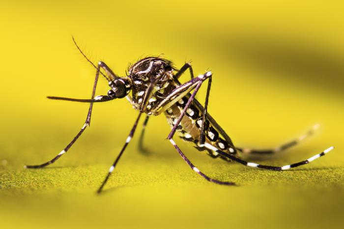

一段DNA，
怎麼認出是哪種動物？
外觀不容易判斷時，研究者也會比較DNA。
同一個位置，字母留下了哪些線索？

相同位置，字母不一樣。
Aedes nigromaculisMOSN4746-20
Aedes taeniorhynchusMOSN680-18
第349欄：第一筆是A，第二筆是T。
這20個字母只用來看差異，不能單靠短窗認定物種。
先定序，
再讓AI讀字母。
研究者完成採樣、DNA萃取、擴增與定序，才得到A、C、G、T序列。DeepCOI從這之後開始工作。
往下看完整分工已知分類的參考資料
Aedes nigromaculis物種名稱來自原始參考標籤
TATCAGCAGGAACAGCTCAT…
已訓練的DeepCOI
先辨認屬於哪個「門」
再由對應模型，同時提出綱至種的分類
流程示意。模型使用較長的序列；上方20字母只供教學。
本頁沒有重新訓練或執行推論。
COI是DNA中的哪一段？
動物的DNA條碼常取自粒線體。這個研究使用COI基因中的COI-5P條碼區段，並不需要把整個基因組都交給模型。
用三維動畫看位置與字母的關係結果先是候選，還不是確認。
每條序列會得到不同分類階層的名稱與分數。五個階層由模型同時提出，不能當成五次獨立確認；分數也不能直接當成答對機率。
輸出裡會有哪些欄位？
- 序列編號
- 對應哪一條輸入序列
- 分類階層
- 綱、目、科、屬或種
- 分類名稱
- 模型提出的分類標籤
- 模型分數
- 配合門檻決定是否保留
這裡說明格式，沒有填入假定的名稱或逐條分數。
三維位置、形狀與比例是教學示意。雙股展開用來對照結構與字母，不是定序儀器，也不是AI在解開DNA。本頁未執行模型推論。
不播放，直接閱讀
都是蚊子，要怎麼分種類？
身體、翅膀和腳的細節能幫助辨認。外觀不容易判斷時，研究者也會比較DNA。
照片是埃及斑蚊，作為對象介紹；不是本研究的採樣照片。
先找到粒線體裡的DNA。
動物的DNA條碼常取自粒線體。把粒線體內的一個DNA環放大，就能指出COI基因，再選其中常用的COI-5P條碼區段。
位置、形狀與比例為教學示意，沒有把這些蚊類條碼定位到完整粒線體基因組。
實驗定序後，DNA就能記成字母。
研究者先完成DNA萃取、擴增與定序，才取得COI序列。鏡頭把雙股的局部展開，突出其中一股，接到同一串A、C、G、T。
展開雙股是結構與字母對照的示意，不是實際定序儀器，也不是AI在解開DNA。畫面只放大20個字母，並非模型的完整輸入。
把同一段DNA，放在一起看。
研究常用COI基因的一小段序列，作為動物的DNA條碼。同一位置上的字母差異，是辨認種類的線索。
這裡使用作者公開的真實參考序列。色底只標出字母不同的位置，不是模型的重要性分數。
先從有名稱的序列學習。
研究者先用已知分類的參考序列訓練模型。訓練完成後，才送入待分類的序列。模型把相鄰四個字母分成一組，讀取序列中的特徵。
每次送入一條新序列，不會重新訓練整個模型。畫面是機制示意，沒有執行推論。
先分大的類群，再看較細的分類。
先辨認屬於哪個大類群，也就是分類裡的「門」。再由對應模型，同時提出綱、目、科、屬、種的名稱與分數。
這裡只展示輸出格式，沒有執行模型。五個階層不是五次獨立確認，分數也不能直接當成答對的機率。
平均較高，還要看分在哪一層。
研究用四組節肢動物的長讀長定序資料做比較。五個分類階層的平均F1，是DeepCOI較高；只看「種」這一層，則是BLAST較高。
正式論文Table 4，使用各方法指定門檻。F1兼顧漏分與錯分，越高越好；不是正確率。
大量條碼整理得更快，種名仍要核對。
DeepCOI協助研究者整理大量COI條碼。序列品質、長度與參考庫的涵蓋範圍，都會影響分類能不能採用。
參考庫沒有涵蓋的物種，或過短、品質不佳的序列，仍不能保證得到可靠種名。序列條數也不等於動物隻數。
平均較高，
分到「種」呢？
研究用四組節肢動物的長讀長定序資料，比較DeepCOI、RDP與BLAST。五個階層的平均，與只看「種」的結果不同。
往下看結果的使用條件五個分類階層的平均
F1 · 0至1，越高越好
- DeepCOI0.864
- RDP0.658
- BLAST0.853
只看「種」這一層
F1 · 0至1，越高越好
- DeepCOI0.858
- RDP0.642
- BLAST0.909
正式論文Table 4，各方法使用指定門檻。F1綜合考量錯分與漏分，越高越好；0.864不代表86.4%的動物被正確辨認。
這組比較的條件是什麼？
DeepCOI分數須高於0.9，RDP高於0.8；BLAST比對須涵蓋輸入序列超過85%的長度，並依分類階層設相似度門檻。這是這些資料與設定下的比較，不表示每個階層或所有動物都較好，也沒有據此宣稱統計顯著。
整理得更快，
種名仍要核對。
DeepCOI協助研究者整理大量已定序的COI條碼。序列品質、長度與參考資料，都會影響名稱能不能採用。
這項研究的主要分類驗證沒有涵蓋短於400個鹼基的序列。參考庫沒有涵蓋的物種，也不能保證得到可靠種名。必要時只保留較高的分類階層，或暫不採用分類。
序列條數不能直接換算動物隻數、密度或生物量。最後仍要回到原本的採樣與調查情境判讀。
資料與圖片從哪裡來
研究與序列
Gwak與Rho，2025，Genome Biology 26:393。方法、條件與正式Table 4的來源。作者程式與輸出說明。
固定版本的蚊類對齊資料。原檔50筆、5個物種，動畫選4筆，首頁比較其中2筆。物種名稱是原始參考標籤。資料MIT授權，Copyright (c) 2025 DMnBI。本頁短窗與完整記錄ID。
照片與三維示意
CDC／Amy E. Lockwood，PHIL 26041，公有領域的埃及斑蚊實拍，用來介紹對象，不是這些序列的對應標本。照片保留原色。
三維模型由本頁製作，沒有把條碼定位到完整基因組。背景依據見原始條碼研究、BOLD的COI-5P標記說明與蚊類粒線體研究。素材與工具記錄。